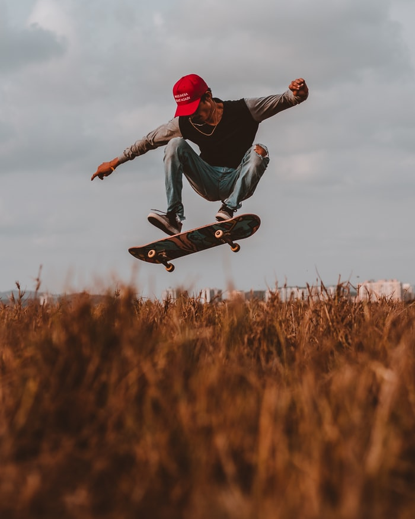
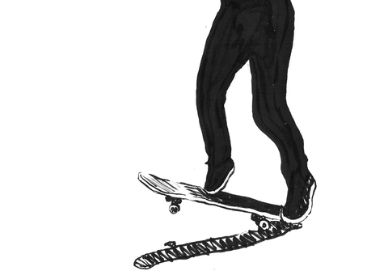
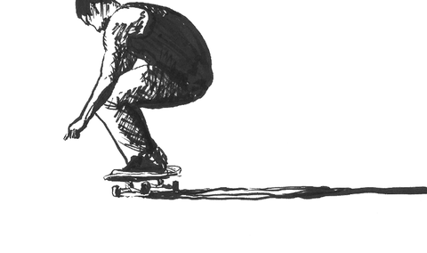

Skateboarding is a very popular and inclusive recreational sport practiced 0 by people like children, youth and adults, it is a sport that consists of maintaining balance on askateboard while moving fast.
This is one of the sports considered extreme, most people come to this practice for fun and entertainment, since skateboarding has developed as a youth subculture that emphasizes creativity and individuality.
The street style features tricks performed in a real urban environment which include various obstacles such as stairs, rails, barrels, ledges, and others.
This is an alternative to conventional team sports. But there is also the field as a professional sport that has a variety of competitions, including Vert, Street Street, Big Air, Best Trick and SuperPark, many of these styles are based on aerial and terrestrial stunts performed on half pipes that perhaps were built for emulation of empty pools.

The history of skateboarding is somewhat uncertain since there is no single moment or person who has come up with this idea and developed it, and who can be specifically said to have been the inventor of skateboarding. Skate was born as something casual and it evolved in its own way to become what it is today.

This sport has its beginnings in the 50s, in California in the United States, beginning first on the part of surfers when trying to transfer this sport to land to be able to do it at any time of the year and without the need for good waves, such as boards. Skateboards did not exist yet, the first improvisations of these were on the part of these people when trying to make simple wooden boards with four wheels on their sides.
The first commercial skateboards appeared in 1959, when the first marketers like Makaha and Hobie tried to capitalize on the increasing popularity of surfing by promoting skateboarding, as the best alternative when there were no surf waves. In 1963, Makaha formed the first professional skateboard team, and that same year the first skateboard competition was held in California.
Now a video of a professional skateboarder rolling through the streets of Colombia:
Professional skaters are those who stand out in every tournament and always carry out new tricks. In general they dominate tournaments and always end up prevailing over young people who are just making their first skateboarding weapons.

The three most remembered professional skaters of all time are Danny Way, Rodney Mullen and Tony Hawk. Rodney Mullen, in addition to his great recognition in all the tournaments in which he participates, is one of the greatest professional skateboarders since he has invented the vast majority of tricks that are used in modern skateboarding.
| 900 and 1260 degree turns | - The first trick is calm and goes hand in hand with speed and regularly a ramp. |
|---|---|
| Varial Heelflip Underflip | - This trick was popularized by another of the world's skateboarding stars. |
| 540 Rodeo Flip | - This is one of the most popular tricks among bowls or abandoned pools. |
| Halfcab Broken Fingers | - This hack is a variation of the Impossible Halfcab first landed by Darryl Grogan which, in turn, is a derivative of the Impossible created by Rodney Mullen in 1982. |
| Kickflip 360 Truck stand | - The combination of a 360 degree Kickflip and a truckstand perfectly mixes the essence of skate freestyle . |
| Front Foot Impossible | - Another variation of the Impossible is this new trick in which its own name mentions the feat. The Impossible turns forward with the front foot. |